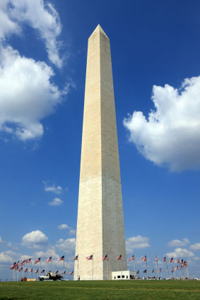

About the Washington Monument
 The Washington Monument, designed by Robert Mills and eventually completed by Thomas Casey and the U.S. Army Corps of Engineers, honors and memorializes George Washington at the center of the nation's capital. The structure was completed in two phases of construction, one private (1848-1854) and one public (1876-1884). Built in the shape of an Egyptian obelisk, evoking the timelessness of ancient civilizations, the Washington Monument embodies the awe, respect, and gratitude the nation felt for its most essential Founding Father. When completed, the Washington Monument was the tallest building in the world at 555 feet, 5-1/8 inches. The original steam-driven elevator, with a trip time of 10-12 minutes to the top of the monument, was replaced with an electric elevator in 1901. The National Park Service was given jurisdiction over the Washington Monument in 1933, and the first restoration of the structure began as a Depression Era public works project in 1934. Another round of restoration occurred in 1964, and again in 1998-2001. The elevator used today was installed in this most recent round of work.
Fun Facts
-
The Cover was made out of marble from Maryland.
-
The monument was made to honor our 1st president George Washington.
-
Washington Monument is 555 feet tall.
-
The original elevator ride to the top took 20 minutes.
-
The Washington Monument as dedicated stood at 555 feet 5 inches tall. The Cologne Cathedral had been the world’s tallest man-made structure. The Eiffel Tower soon surpassed the Monument.
- The Washington Monument: Movie star. Nothing says “location shot” in a film like the Washington Monument, especially when the icon is under attack from aliens and terrorists, or used as a backdrop in a thriller or mystery. But maybe the most memorable appearance, in a real-life moment, occurred in August 1963, when Martin Luther King Jr. spoke on the mall in Washington, with the Lincoln Memorial stage facing the Monument.